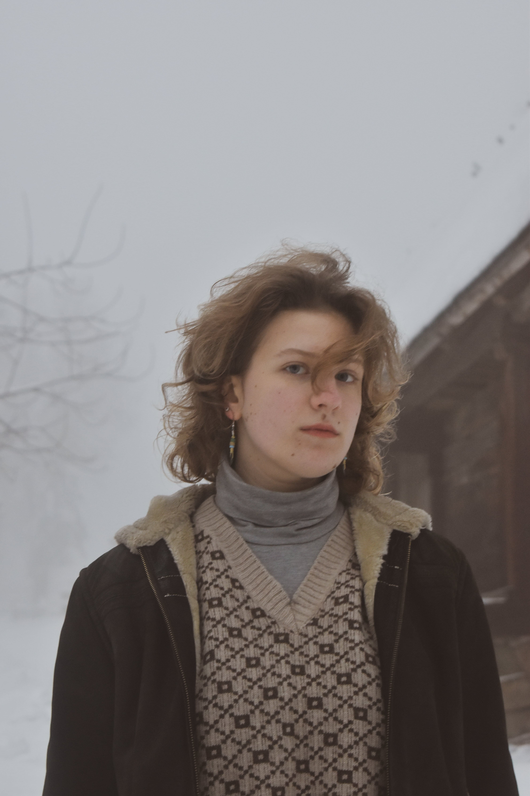
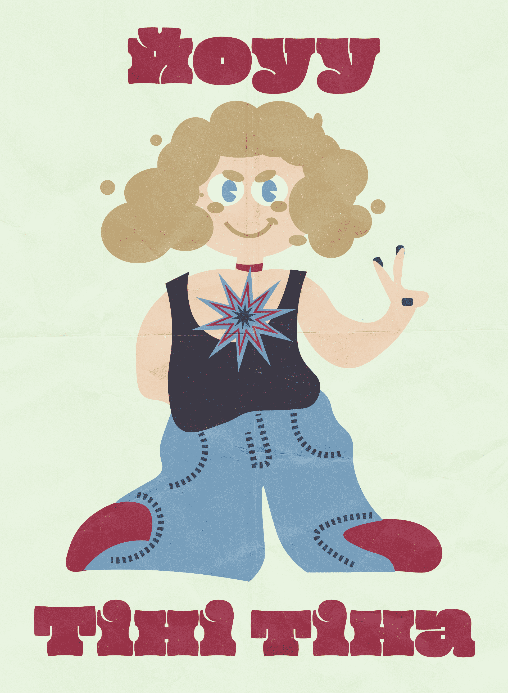
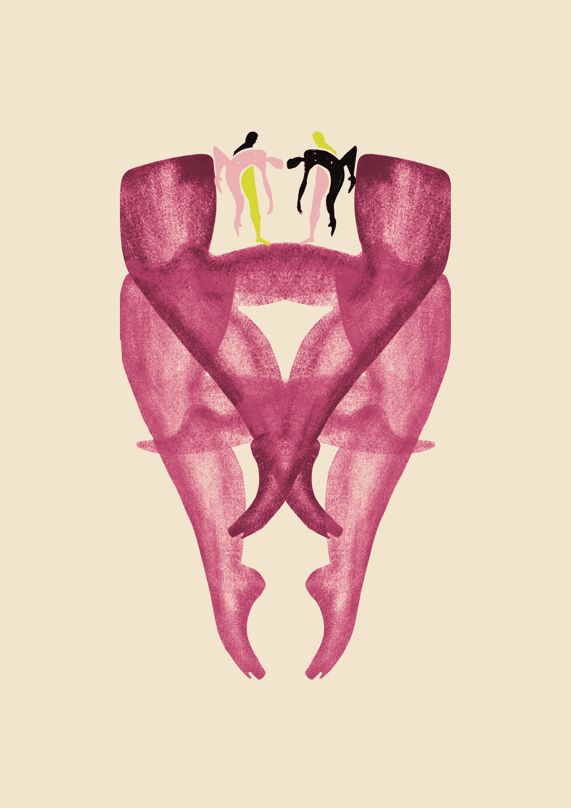
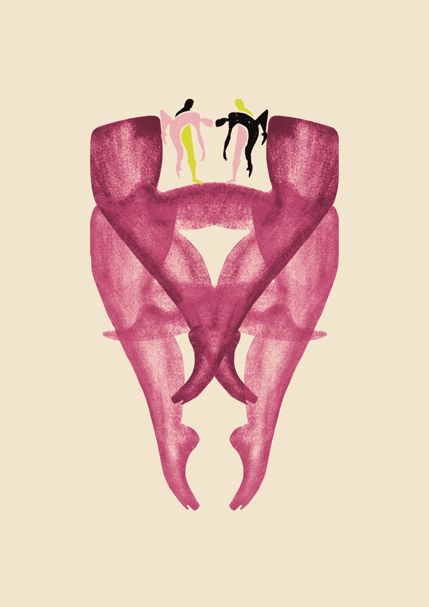
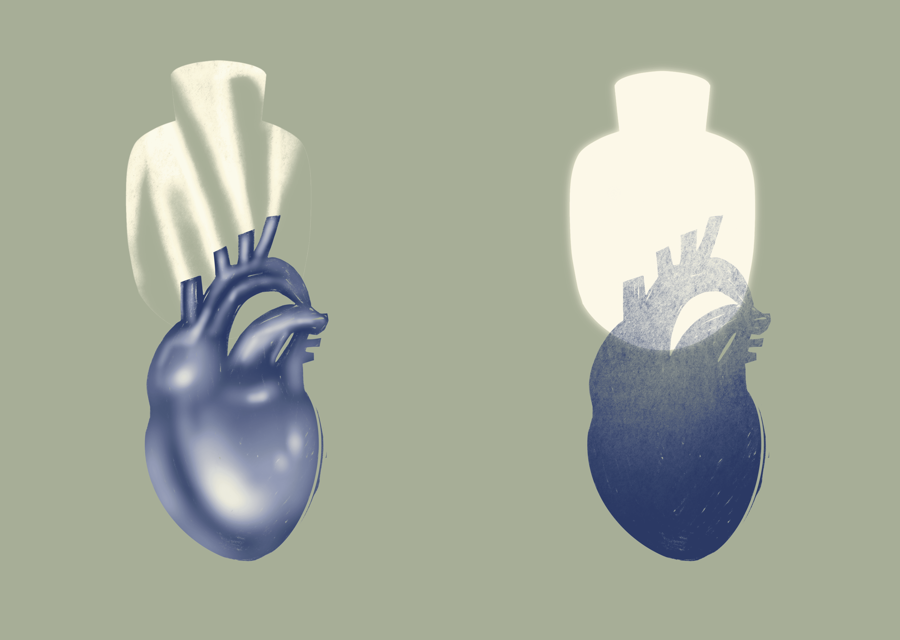
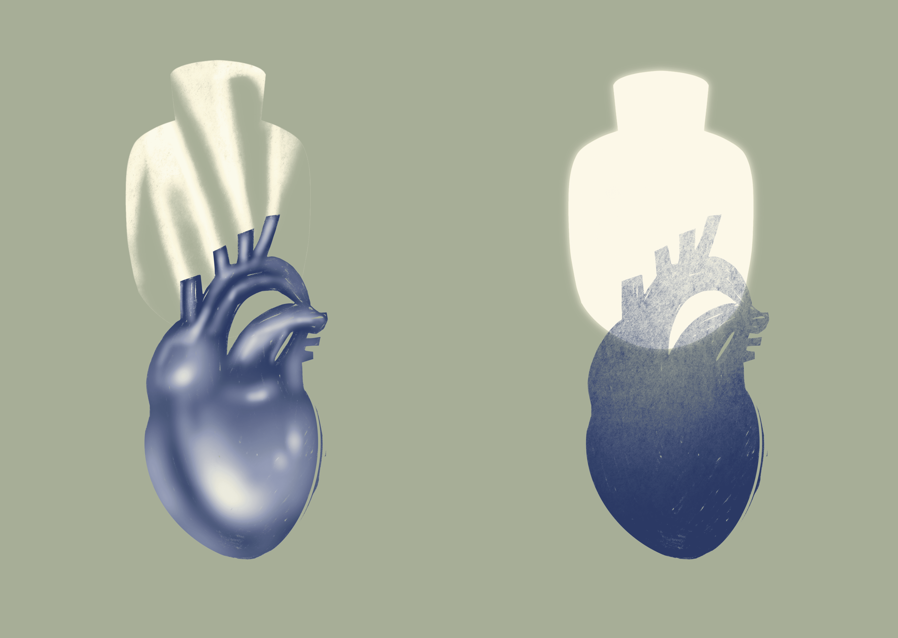

Привіт!
Я Христя, я графічна дизайнерка та ілюстраторка! Чому ж я tiny tina (в жарт друзі кличуть тіні тіна), спитаєте ви? Якось мій друг грав у Tiny Tina's Wonderlands і почав називати мене іменем головної героїні. За декілька років я до цього звикла і це навіть почало мені подобатись. У підсумку я перейменувала свій інстаграм і підписую так діджитал роботи.
Це я 👇
І це теж я, але очима моєї подруги Іваночки 👇
Також останнім часом я багато малюю і хочу поділитися тут декількома крайніми ілюстраціями! Раніше я відчувала, що боюся ділитися своїми роботами та творчістю, але зараз усвідомлюю, що я завжди відчуватиму, що можна зробити щось краще. Тому стараюсь на себе не тиснути і по-трошки публікую все у свій інстаграм аккаунт.
 



 

Посилання на мої соцмережі: